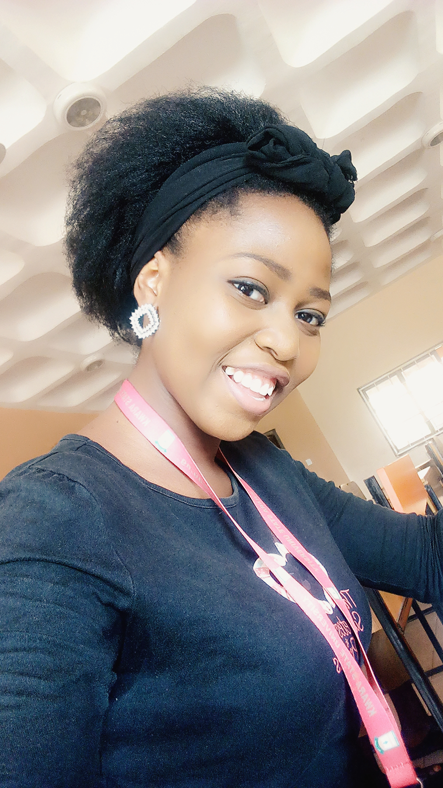

GO BACK TO MY HOMEPAGE

MY ACHEIVEMENT
Read more
I am kolawole salome
Every person in life has some achievements, accomplishments, rewards and successes earned. At the same time mistakes, failures and setbacks as well. My achievements, my successes and my accomplishments are the one that make me happy and proud. Whereas, my mistakes, my failures and setbacks make me strong and bold.
There are various kinds of achievements one may have. There are some examples of achievements like personal achievements, academic achievements, sports achievements etc.
There are various roles in which one achieves something. Taking myself as an example it would be like my achievements as a student, my accomplishments as student in school, college or in personal life.
MY ACADEMIC ACHEIVEMENTS
Academic achievements are those gains that are accomplished by a student during his high school, college or university life. Everyone who is well taught has some personal achievements including academic achievements as well.
My student life has given me many academic achievements that I must be proud of. Some of my academic achievements I have listed below.
My first academic achievement is that I have successfully completed my education till now with A+ throughout. It is my greatest achievement of life
My second greatest academic achievement is that I have successfully got admission in my desire career. My parents are proud of me. They always wanted me to be a great librarian. It is my passion to serve my country.
My third biggest academic achievement is that on the basis of good scores and my professional degree, I got study scholarship for UK. I really loved my studying experience there.
My last academic accomplishment is that I am currently serving successfully at the national library.
MY ACHEIVEMENTS IN SCHOOL
Achievements are the signs of good student life. They show the talent, the worth and the status of a student. To achieve something we work hard and we become focused. Therefore, we learn a lot of things like self discipline, hard work, dedication, self respect and motivation.
School life achievements are good and they must be the part of student’s life. I have a good many my school achievements. I must be proud of whatever I have achieved through out my personal life.
. Throughout my years of schools I have achieved valuable success. I have some personal achievements, some academic achievements and a few extracurricular achievements.
I have been a diligent and dedicated student of my school. In fact, I am the favorite student in my school. It is my greatest achievement that I have been getting A+ in all of my exams and assessments. This achievement is in fact due to the hard work done under the guidance of my teachers and prayers of my parents.
I always take interest in extracurricular activities. I am good speaker and good at playing basket ball. It is my great extracurricular achievement that I secured first prize in inter schools debates and speech competition, held last month.
All of my school fellows and my teachers are proud of me. Apart from that I represented my team in annual inter schools basket ball sport. We successfully won the final match. It is my biggest sports achievement of student’s life. I will never forget.
I am grateful to my school teachers and my parents. Thanks to those achievements and set goals I struggled and worked hard. Thereby, I have known how to work hard and how to make achievements.
My school achievements are surely going to help me to grow and gain more in my upcoming life days.
Read more